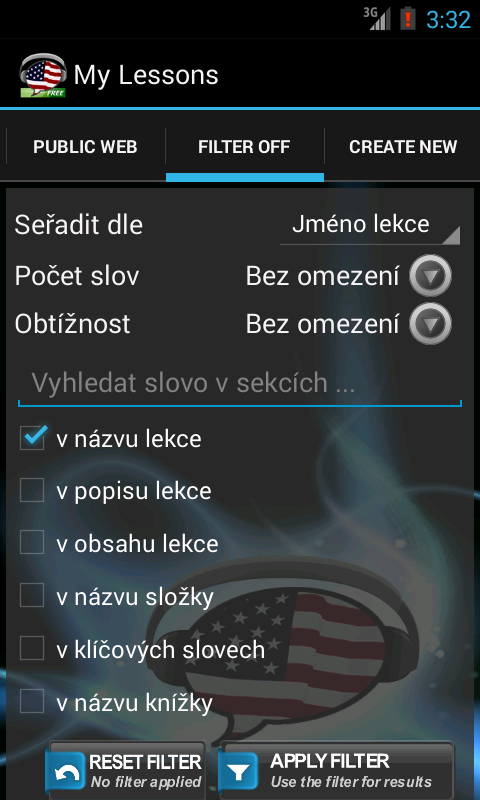

|  | Filters umo¾òují lep¹í a pøesnìj¹í vyhledávání lekcí na Internetu. Pomocí Filtrù najdete lekce obsahující specifická slovíèka nebo mù¾ete výsledky omezit poètem slov v lekci, obtí¾ností nebo kdy byla lekce vytvoøena. Zadejte vhodnou kombinaci podmínek a nejdìte si lekce které se chcete uèit. Po stisknutí tlaèítka Apply Filter se omezení zaktivují, zmìní se ikona zálo¾ky a výsledky vyhledávání se omezí dle va¹eho výbìru. Filter se bude pou¾ívat do té doby ne¾ ho zru¹íte tlaèítkem Reset Filter. |